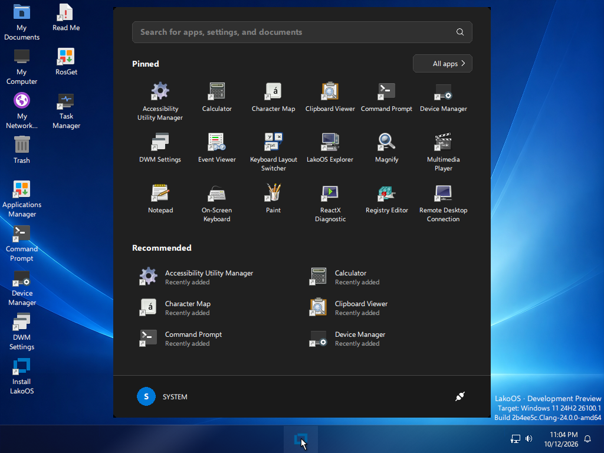
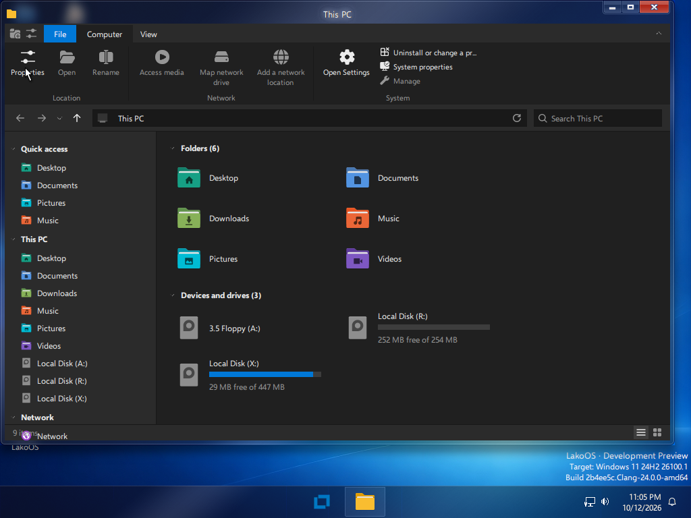

Built to feel familiar
The shell, the apps and the layout follow the Windows you know. Underneath is a free NT-style system.
A Start menu you can shape
Two layouts share one engine. Pinned apps, recommendations, instant search and a power menu.
- Centered style: rounded panel, 6×3 pinned grid, Recommended list.
- List and tiles style: navigation rail, alphabetical list with letters, tiles.
- Keyboard first: type to search, Enter to launch, Esc to close.
- Follows the light or dark theme.


Ribbon, panes and drives
The new File Explorer opens for every folder. It is explorer.exe in the Windows folder.
- Ribbon with File, Computer and View tabs.
- Navigation pane with Quick access and This PC.
- Drives with free-space bars, address bar and search.
- List and tile views.
The tools keep their names
Open them the way you always did.
Task Manager
taskmgr.exe with processes, performance and details.
Control Panel
control.exe with categories, search and every .cpl applet.
Command Prompt
cmd.exe with the usual command line tools.
Registry Editor
regedit.exe for hives and values.
Disk Management
diskmgmt.exe and diskpart.exe.
Event Viewer
eventvwr.exe for system logs.
A modern NT core
The system is a fork of LiberNT, which targets Windows 11 (NT 10) compatibility on 64-bit platforms.
64-bit first
amd64, arm64 and riscv64 are the focus, with i386 kept building.
WoW64
32-bit applications run on 64-bit systems through WoW64.
WDDM and DWM
A display driver model and desktop composition for blur and effects.
New memory manager
A clean-room memory manager and cache manager.
UEFI boot
UEFI with a GOP framebuffer, plus legacy BIOS boot.
Open source
GNU GPL. Read it, change it and share it.